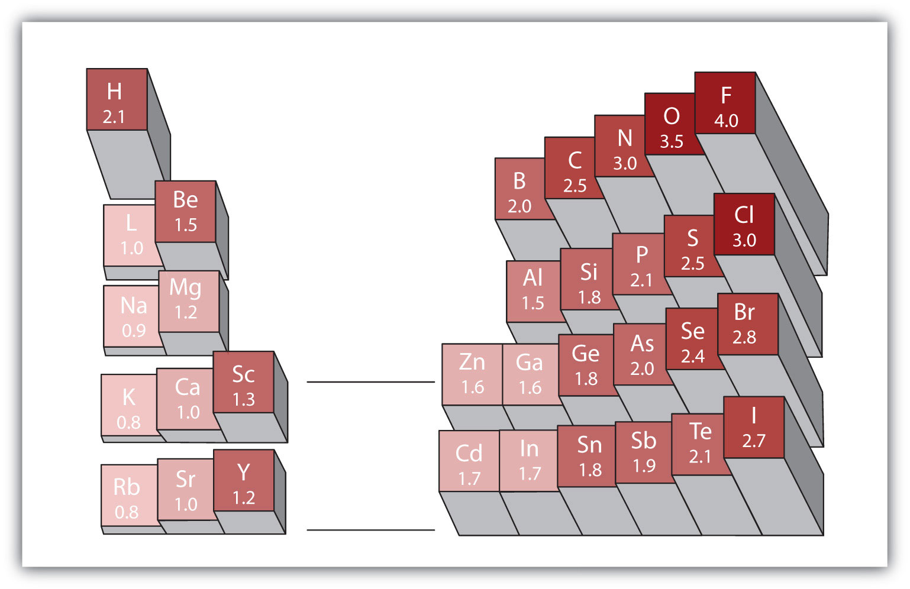
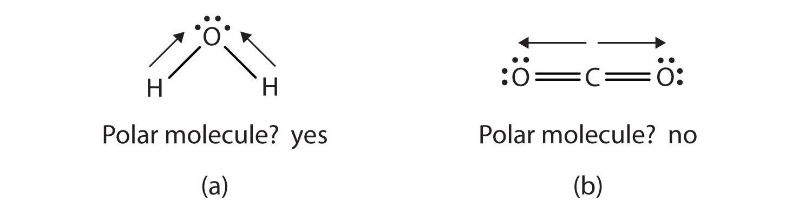

Covalent bonds have certain characteristics that depend on the identities of the atoms participating in the bond. Two characteristics are bond length and bond polarity.
In Section 4.1 "Covalent Bonds", we stated that the covalent bond in the hydrogen molecule (H2) has a certain length (about 7.4 × 10−11 m). Other covalent bonds also have known bond lengths, which are dependent on both the identities of the atoms in the bond and whether the bonds are single, double, or triple bonds. Table 4.2 "Approximate Bond Lengths of Some Single Bonds" lists the approximate bond lengths for some single covalent bonds. The exact bond length may vary depending on the identity of the molecule but will be close to the value given in the table.
Table 4.2 Approximate Bond Lengths of Some Single Bonds
| Bond | Length (× 10−12 m) |
|---|---|
| H–H | 74 |
| H–C | 110 |
| H–N | 100 |
| H–O | 97 |
| H–I | 161 |
| C–C | 154 |
| C–N | 147 |
| C–O | 143 |
| N–N | 145 |
| O–O | 145 |
Table 4.3 "Comparison of Bond Lengths for Single and Multiple Bonds" compares the lengths of single covalent bonds with those of double and triple bonds between the same atoms. Without exception, as the number of covalent bonds between two atoms increases, the bond length decreases. With more electrons between the two nuclei, the nuclei can get closer together before the internuclear repulsion is strong enough to balance the attraction.
Table 4.3 Comparison of Bond Lengths for Single and Multiple Bonds
| Bond | Length (× 10−12 m) |
|---|---|
| C–C | 154 |
| C=C | 134 |
| C≡C | 120 |
| C–N | 147 |
| C=N | 128 |
| C≡N | 116 |
| C–O | 143 |
| C=O | 120 |
| C≡O | 113 |
| N–N | 145 |
| N=N | 123 |
| N≡N | 110 |
| O–O | 145 |
| O=O | 121 |
Although we defined covalent bonding as electron sharing, the electrons in a covalent bond are not always shared equally by the two bonded atoms. Unless the bond connects two atoms of the same element, there will always be one atom that attracts the electrons in the bond more strongly than the other atom does, as shown in Figure 4.3 "Polar versus Nonpolar Covalent Bonds". When such an imbalance occurs, there is a resulting buildup of some negative charge (called a partial negative charge and designated δ−) on one side of the bond and some positive charge (designated δ+) on the other side of the bond. A covalent bond that has an unequal sharing of electrons, as in part (b) of Figure 4.3 "Polar versus Nonpolar Covalent Bonds", is called a polar covalent bondA covalent bond with an unbalanced electron distribution across the bond.. A covalent bond that has an equal sharing of electrons (part (a) of Figure 4.3 "Polar versus Nonpolar Covalent Bonds") is called a nonpolar covalent bondA covalent bond with a balanced electron distribution across the bond..
Figure 4.3 Polar versus Nonpolar Covalent Bonds

(a) The electrons in the covalent bond are equally shared by both hydrogen atoms. This is a nonpolar covalent bond. (b) The fluorine atom attracts the electrons in the bond more than the hydrogen atom does, leading to an imbalance in the electron distribution. This is a polar covalent bond.
Any covalent bond between atoms of different elements is a polar bond, but the degree of polarity varies widely. Some bonds between different elements are only minimally polar, while others are strongly polar. Ionic bonds can be considered the ultimate in polarity, with electrons being transferred rather than shared. To judge the relative polarity of a covalent bond, chemists use electronegativityA relative measure of how strongly an atom attracts electrons when it forms a covalent bond., which is a relative measure of how strongly an atom attracts electrons when it forms a covalent bond. There are various numerical scales for rating electronegativity. Figure 4.4 "Electronegativities of Various Elements" shows one of the most popular—the Pauling scale. The polarity of a covalent bond can be judged by determining the difference in the electronegativities of the two atoms making the bond. The greater the difference in electronegativities, the greater the imbalance of electron sharing in the bond. Although there are no hard and fast rules, the general rule is if the difference in electronegativities is less than about 0.4, the bond is considered nonpolar; if the difference is greater than 0.4, the bond is considered polar. If the difference in electronegativities is large enough (generally greater than about 1.8), the resulting compound is considered ionic rather than covalent. An electronegativity difference of zero, of course, indicates a nonpolar covalent bond.
Figure 4.4 Electronegativities of Various Elements
A popular scale for electronegativities has the value for fluorine atoms set at 4.0, the highest value.
Arguably the most influential chemist of the 20th century, Linus Pauling (1901–94) is the only person to have won two individual (that is, unshared) Nobel Prizes. In the 1930s, Pauling used new mathematical theories to enunciate some fundamental principles of the chemical bond. His 1939 book The Nature of the Chemical Bond is one of the most significant books ever published in chemistry.
By 1935, Pauling’s interest turned to biological molecules, and he was awarded the 1954 Nobel Prize in Chemistry for his work on protein structure. (He was very close to discovering the double helix structure of DNA when James Watson and James Crick announced their own discovery of its structure in 1953.) He was later awarded the 1962 Nobel Peace Prize for his efforts to ban the testing of nuclear weapons.
In his later years, Pauling became convinced that large doses of vitamin C would prevent disease, including the common cold. Most clinical research failed to show a connection, but Pauling continued to take large doses daily. He died in 1994, having spent a lifetime establishing a scientific legacy that few will ever equal.
Linus Pauling was one of the most influential chemists of the 20th century.
Describe the electronegativity difference between each pair of atoms and the resulting polarity (or bond type).
Solution
Describe the electronegativity difference between each pair of atoms and the resulting polarity (or bond type).
C and O
K and Br
N and N
Cs and F
When a molecule’s bonds are polar, the molecule as a whole can display an uneven distribution of charge, depending on how the individual bonds are oriented. For example, the orientation of the two O–H bonds in a water molecule (Figure 4.5 "Physical Properties and Polarity") is bent: one end of the molecule has a partial positive charge, and the other end has a partial negative charge. In short, the molecule itself is polar. The polarity of water has an enormous impact on its physical and chemical properties. (For example, the boiling point of water [100°C] is high for such a small molecule and is due to the fact that polar molecules attract each other strongly.) In contrast, while the two C=O bonds in carbon dioxide are polar, they lie directly opposite each other and so cancel each other’s effects. Thus, carbon dioxide molecules are nonpolar overall. This lack of polarity influences some of carbon dioxide’s properties. (For example, carbon dioxide becomes a gas at −77°C, almost 200° lower than the temperature at which water boils.)
Figure 4.5 Physical Properties and Polarity
The physical properties of water and carbon dioxide are affected by their polarities.
What is the name for the distance between two atoms in a covalent bond?
What does the electronegativity of an atom indicate?
What type of bond is formed between two atoms if the difference in electronegativities is small? Medium? Large?
bond length
Electronegativity is a qualitative measure of how much an atom attracts electrons in a covalent bond.
nonpolar; polar; ionic
Which is longer—a C–H bond or a C–O bond? (Refer to Table 4.2 "Approximate Bond Lengths of Some Single Bonds".)
Which is shorter—an N–H bond or a C–H bond? (Refer to Table 4.2 "Approximate Bond Lengths of Some Single Bonds".)
A nanometer is 10−9 m. Using the data in Table 4.2 "Approximate Bond Lengths of Some Single Bonds" and Table 4.3 "Comparison of Bond Lengths for Single and Multiple Bonds", determine the length of each bond in nanometers.
An angstrom (Å) is defined as 10−10 m. Using Table 4.2 "Approximate Bond Lengths of Some Single Bonds" and Table 4.3 "Comparison of Bond Lengths for Single and Multiple Bonds", determine the length of each bond in angstroms.
Refer to Exercise 3. Why is the nanometer unit useful as a unit for expressing bond lengths?
Refer to Exercise 4. Why is the angstrom unit useful as a unit for expressing bond lengths?
Using Figure 4.4 "Electronegativities of Various Elements", determine which atom in each pair has the higher electronegativity.
Using Figure 4.4 "Electronegativities of Various Elements", determine which atom in each pair has the lower electronegativity.
Will the electrons be shared equally or unequally across each covalent bond? If unequally, to which atom are the electrons more strongly drawn?
Will the electrons be shared equally or unequally across each covalent bond? If unequally, to which atom are the electrons more strongly drawn?
A C–O bond is longer.
Actual bond lengths are very small, so the nanometer unit makes the expression of length easier to understand.